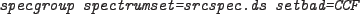

The quality of spectral channels may be set to bad by choosing the appropriate option. If set bad, channels will not be considered when grouping channels with one of the statistical methods. However, if a range or regular binning is specified which includes these bins then this will take precedence and the quality of these channels will be set to good.
The options are:

in which case the channels to exclude from spectral fitting will be read from a calibration file.
in which case the channels from 0 to 10 and 790 to 799 will be set bad.
in which case the channels with energy between 0 and 0.2 keV or 10 and 15 keV will be set to bad.
in which case no channels will be excluded before the spectrum is grouped.